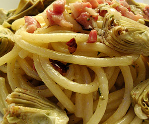

Artischocken mit Bucatini (dicke Spaghetti)
5,5 von 6ca. 15 nussgrosse artischocken waschen, den oberen drittel wegschneiden und von den äusseren blätter befreien, vierteln. in oliven öl, speck, zwiebeln, knoblauch und die artischocken andämpfen. mit einem dl weisswein ablöschen und 10 minuten garen. etwas rahm dazugeben. mit salz, pfeffer und frischem thymian abschmecken.
